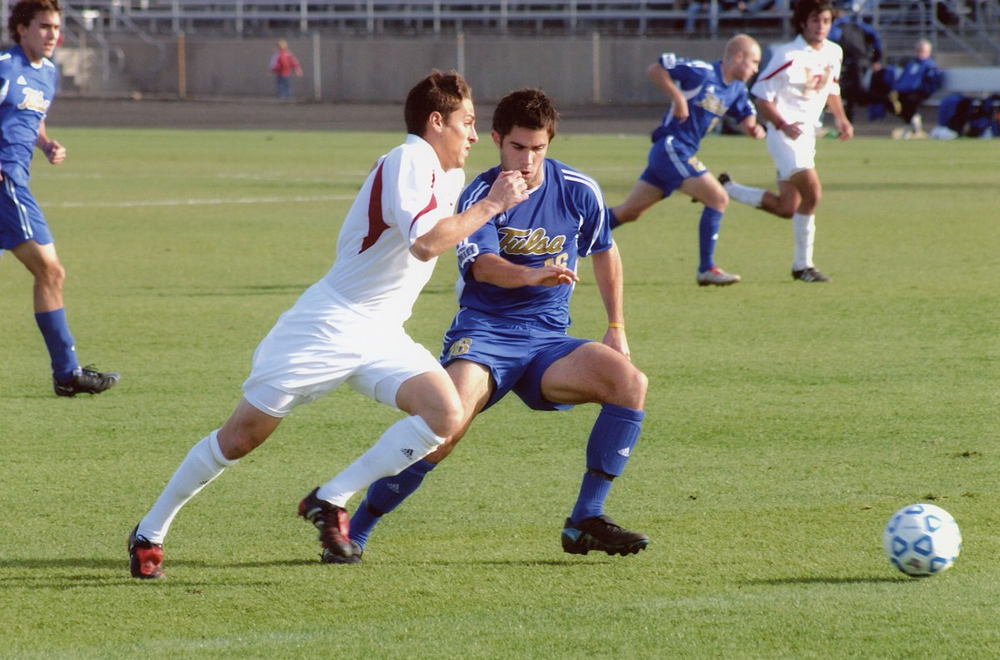
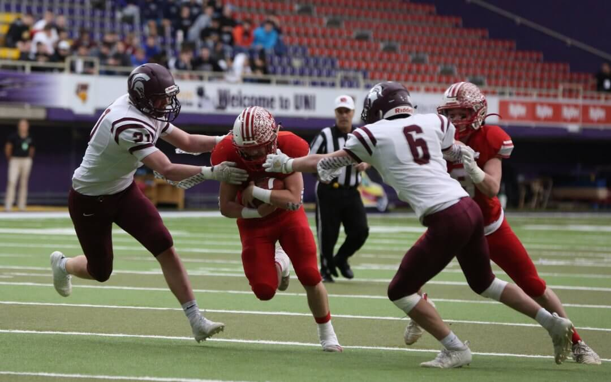

UNIVERSITY
The University’s Centers and Institutes provide programs and targeted study and immersion in a variety of areas and initiatives. There are also a host of programs associated with individual schools and colleges.

In the spirit of a University that provides its students with educational opportunities both broad and deep, Brown is committed to sustaining one of the most wide-ranging NCAA Division I intercollegiate sports programs for men and women in the country. The athletic program plays an essential role in teaching students to conduct themselves with honesty and integrity, make sacrifices, strive for excellence, persevere through adversity, and compete with dignity and pride while developing a commitment to teamwork and service to the community.
A comprehensive program that puts you in the driving seat to organize your recruiting, identify your best fit colleges and effectively communicate with college coaches.
Coaches are working nonstop to ensure that they are able to implement their philosophies to create perfect team dynamics. We understand that you only have little time to get your team sharp before the new season starts.
Football University is the recognized leader in developing and enhancing the ability and skill of serious football players in middle school and high school. Since 2007, Football University has helped thousands of student-athletes become better football players through intense, position-specific technique training, NFL-level coaching and instruction, and the country’s most elite events.
The University’s Centers and Institutes provide programs and targeted study and immersion in a variety of areas and initiatives. There are also a host of programs associated with individual schools and colleges.

Arts exists to foster the intellectual, creative, and personal growth of its students through courses in the humanities. We encourage our students to dream, to think critically, creatively, and insightfully, and to engage in their own lives, their communities, and the world.

GRINDELWALD UNIVERSITY is committed to the academic progression of our students, which we must pursue while protecting the health and safety of our community.